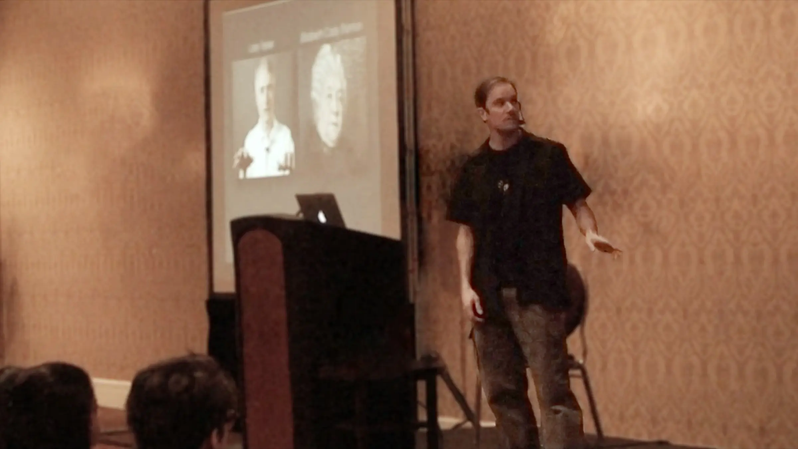

Интерактивность в разработке

Брэт Виктор отлично презентует своё видение мира. Попутно он затрагивает вопрос о необходимости моментального визуального отклика на изменения в исходном коде. Рассказывает о том, как интерактивность позволяет получить совсем иной опыт разработки. Более динамичный.
Примеры, которые он показывает, отчасти напоминают мне о возможностях, которые даёт подход Event Sourcing. Ведь Event Sourcing позволяет работать с перепроигрыванием событий и делать быстрые эксперименты даже над целыми системами в локальном окружении.
Поменял параметр, прогнал цепочку событий, посмотрел на результат. Конечно, это не по-настоящему моментальный отклик, но уже достаточно близко.
Впрочем, всегда есть, куда стремиться.